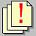

|
In this solution...
- Purpose
- Steps
- Want to Learn More?
- Related Solutions
- Related Education Opportunities
Purpose
Document manager allows the practice to better control the creation and dispersal of patient-related documents. Documents differ from traditional encounterPRO reports in the following ways:
- Reports are temporary and once printed, must be re-generated to view later
- Document are persistent and are automatically saved to folders in the Patient Chart
Documents can be ordered for:
- A specific treatment (prescription or referral letter)
- A specific encounter (Patient Take Home, Encounter SOAP Note), or
- A specific patient (Immunization Report, Current Medications)
When a document is ordered for a treatment or encounter, icons appear on the Office View and Patient Chart that indicate the status of those documents:
-  Documents ordered and ready to send
- Documents sent or completed
Saving Documents to the Patient's Chart
When a document is sent or printed using Document Manager, a copy of that document is saved as an attachment in a folder in the Patient Chart. The folder is selected based on the Attachment Preferences set for attachment folders or the folder specified on the report button used to order the document. See How to: Set the Attachment Folder Preference for details.
|